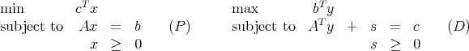

Due: Friday, April 6, 2012, in class.
10% penalty for each day late.
Throughout, (P) and (D) refer to the primal-dual pair of linear programming problems:

where x, s, and c are n-vectors, b and y are m-vectors, and A is an m × n matrix.
- Assume the set ΩP of optimal solutions to (P) is nonempty and bounded. Prove that
there is a feasible solution (y,s) to (D) with s > 0.
- In the framework of (P) and (D), let = b - Ae and ĉ = c - e, where e denotes the vector
where every component is equal to one. Let = cT e + 1. Now consider the linear
programming problem
where t and w are scalars.
Show that if
t = 0 in a strictly complementary optimal solution
to (HLP) then either there exists a vector
x ≥ 0 with Ax = 0 and cT x < 0 or there exists a vector y with AT y ≤ 0 and
bT y > 0.
What do you conclude?
- Given n-vectors x > 0 and s > 0, show that the value of the scalar η that minimizes
||XSe - ηe||2 is η = . Here X and S denote diagonal matrices containing the entries in x
and s respectively, and e is the n-vector of ones.
- Consider the LP:
Show that x = (3, 1, 2) is on the central path for this problem.
- Pick a problem from the netlib LP test suite, at http://www.netlib.org/lp
(Most of the problems are also available in uncompressed MPS format at
http://www.math.ufl.edu/~hager/coap/Pages/mpspage.html ) Solve the problem using
both a simplex algorithm and an interior point algorithm. Do you get the same solution?
What if you don’t crossover to get a BFS? (Hint: You can run cplex directly, without using
ampl. Useful commands in cplex include read, optimize, and display. You can choose the
solver in cplex by issuing the command set lpmethod at the prompt. You can change
options in the barrier solver (including the use of crossover) with the command set
barrier.)
- Hand in a progress report of your work to date on the course project.